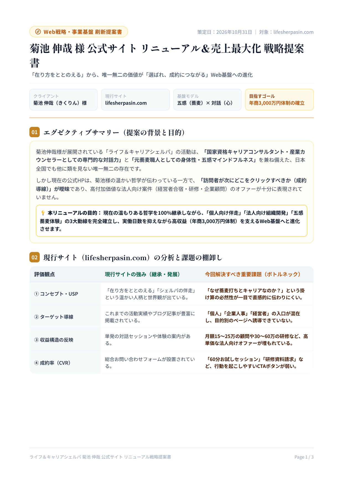
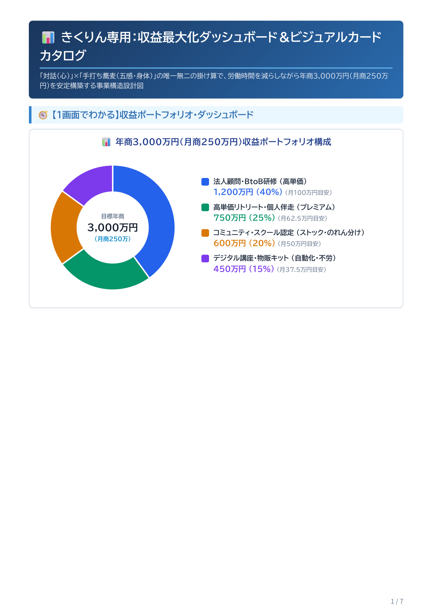

菊池伸哉（きくりん）氏
戦略提案書・Webプロトタイプ全一覧
「ライフ＆キャリアシェルパ」事業の売上最大化とブランド確立に向けた、全成果物（PDF資料・リッチWebページ・プロトタイプ）をこちらから直接閲覧・ダウンロードいただけます。
01. Webサイト プロトタイプ（動作確認版）
公式サイト リニューアル新ランディングページ
「五感をととのえ、心をひらく」をコンセプトに、元蕎麦職人×国家資格キャリアコンサルタントの唯一無二の強みを訴求したメインLPです。
✨ 主な特徴：
・五感体験（蕎麦打ち）とカウンセリングの融合ストーリー
・3つの入口（個人セッション・法人・蕎麦リトリート）の明快な導線
・スマホ完全最適化、FAQ開閉アニメーション、高CVフォーム
法人向け組織開発・経営者リトリート特化LP
「手打ち蕎麦×心理的安全性の組織開発」。経営陣向け合宿、チームビルディング研修、出張蕎麦打ちなどの高単価BtoB向け特化型LPです。
✨ 主な特徴：
・経営者・人事向けに特化したネイビー基調の信頼感あるデザイン
・3つの研修メニュー（役員合宿/チームビルディング/巡回顧問）
・費用目安、導入フロー、研修提案資料請求導線を網羅
02. 完成成果物 PDF 資料（閲覧・ダウンロード）

総合戦略公式Webサイトリニューアル＆売上最大化戦略提案書
現状の課題分析から、ポジション再定義、CVファネル設計、年商目標達成ロードマップまでを包括した総合戦略書。

収益設計収益最大化ダッシュボード＆ビジュアルカタログ
個人セッション、法人研修、蕎麦リトリートの3大事業の単価体系、月別売上シミュレーション、ファネル構造を可視化。